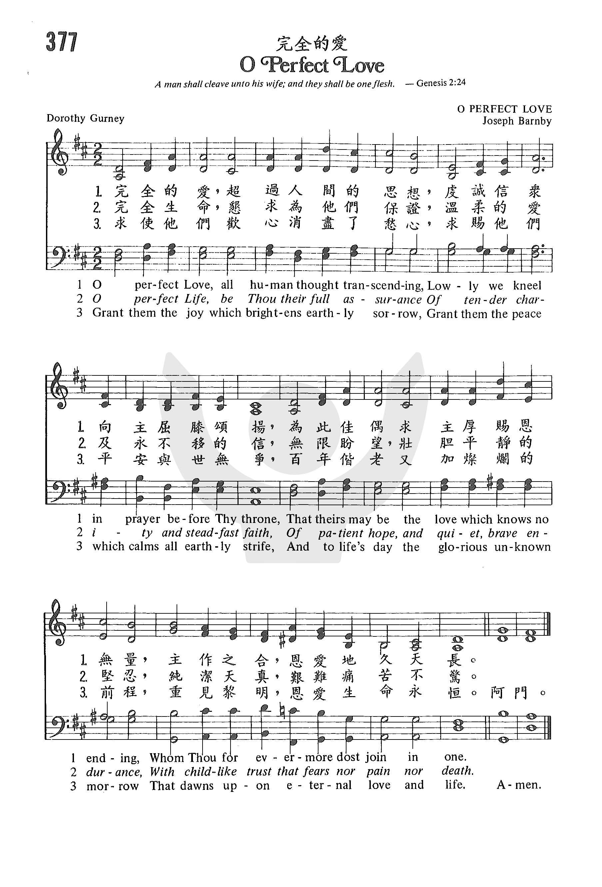

1666 O Perfect Love _Gurney 完全的愛 ▲
|
|
|
|
1 O perfect Love, all human thought transcending,
lowly we kneel in prayer before thy throne,
that theirs may be the love which knows no ending,
whom thou in sacred vow dost join in one.
2 O perfect Life, be thou their full assurance
of tender charity and steadfast faith,
of patient hope and quiet, brave endurance,
with childlike trust that fears no pain or death.
3 Grant them the joy which brightens earthly sorrow;
grant them the peace which calms all earthly strife;
grant them the vision of the glorious morrow
that will reveal eternal love and life.
Psalter Hymnal, 1987
|
1. 完全的愛，超過人間的思想，
虔誠信眾，向主屈膝頌揚，
為此佳偶，求主厚賜恩無量，
主作之合，恩愛地久天長。
2. 完全生命，懇求為他們保證，
溫柔的愛，永久不移的信，
有恆的望，壯膽平靜的堅忍，
純潔天真，艱難痛苦不驚。
3. 求使他倆，歡心消盡了愁心，
求賜他倆，平安寧息世爭；
百年偕老，又加燦爛的前程，
重見黎明，恩愛生命永恆。 |
|
https://www.zanmeishige.com/tab/25745.html?songbook=1&index=377

|
| |
|
http://www.hymncompanions.org/Jun/22/stream.php
完全的愛 O Perfect Love
完全的愛，超過人間的思想，
虔誠信眾，向主屈膝頌揚，
為此佳偶，求主厚賜恩無量，
主作之合，恩愛地久天長。
完全生命，懇求為他們保證，
溫柔相愛，信心永久堅定，
有恆的望，壯膽平心的堅貞，
純潔天真，艱難痛苦不驚。
求使他倆，歡心消盡了愁情，
求賜他倆，平安寧息世爭，
百年偕老，又加燦爛的前程，
重見黎明，恩愛生命永恆。
 (請點耳機收聽)
(請點耳機收聽)
世界一切的愛都是有條件的，當情況改變時，愛也變質；惟有天父對我們的愛，是完全的愛，無條件地赦免我們一切過錯。
「完全的愛」是一首婚禮的祝頌，幾乎在每一個婚禮中，都可聽到這首詩。
這首詩是英國女詩人葛妮（Dorothy Bloomfield Gurney, 1858-1932）為她姊姊的婚禮而作的。
她出版了兩本暢銷的詩集，但被選為聖詩的，僅此一首。

葛妮出身於虔誠的聖公會世家，祖父是倫敦教區的會督，父親是牧師。 1883年，一個主日的晚上，葛妮與即將結婚的姊姊及友人在家中唱聖詩，剛唱完她姊姊最喜愛的「奮力堅守」（O
Strength and Stay），有人嚷道：「多可惜！它的詞句不適合用於婚禮」。
她姊姊則抱怨，枉有妹妹是詩人，卻無佳詩頌婚禮。葛妮聽了，拿起聖詩集說：「好吧，如果你們給我片刻寧靜，讓我到圖書室靜思，也許我能完成」。 十五分鐘內，她用「奮力堅守」的曲調，以愛和生命為主題，寫成了這首「完全的愛」。事後葛妮告訴大家說，這首詩是神助她完成的。
1889年英王喬治五世的妹妹威爾斯公主結婚時，採用這首詩，曲調由名音樂家班比改譜，旋即被選入聖詩集，自此就採用此調。
葛妮在1897年與葛杰理（Gerald Gurney）結婚。 他也是牧師的兒子，一度曾是演員，後被聖公會按牧；但在1919年他倆脫離聖公會而加入天主教。
本曲是十九世紀英國著名的聖樂作曲家班比（Joseph Barnby, 1838-1896，見五月五日）所譜。

中英文聖詩集參考
英文歌名 O
Perfect Love
頌主新歌 579
頌主新歌(中英雙語) 586
教會聖詩 377
生命聖詩 506
新聖詩 254
歡欣讚美 458
聖徒詩集 697
聖詩 579
讚美 468
恩頌聖歌 276
世紀讚頌 442
頌主聖詩 280
讚美詩(新編) 187
校園詩歌II 254
http://www.immanuel.net/cb/hymn/Hymn.asp?HymnID=38
|
|
O Perfect Love |
冠霓杜拉西女士 |
Dorothy Blomfield Gurney |
完全的愛，超過人間思想，
虔誠信眾，向主屈膝頌揚，
為此佳偶，求主厚賜恩無量，
主作之合，恩愛地久天長。 |
O perfect Love, all humna thought
transcending,
Lowly we knee! In prayer before Thy throne,
That theirs may be the love that has no ending,
Whom Thou forevermore dost join in one. |
|
這首詩歌是由冠霓杜拉西女士(Dorothy Blomfield
Gurney,1858-1932)所作,她生長在敬虔愛主的牧師家庭,並接受高度的文化薰陶,後來成為英國一位傑出的女聖詩作者,而她之所以完成此首詩歌,實在要感謝她的姊姊。
原來在1883年時,正當她的姊姊結婚之前的禮拜日晚上,家中親人與一群好友們相聚一起圍坐唱著詩歌,大家都唱得興高采烈,當他們唱到這首"力量與保守"時,大家都非常喜歡,尤其這首歌正是姊姊的最愛,這時候有人嚷著說:"實在好可惜,這首歌竟然不是婚禮的詩歌",於是姊姊便把頭轉向妹妹對她說:"有了一位能寫詩作詞的妹妹,若不能為這首曲調配上新的歌詞,使它適合婚禮之用,則縱然有再多富有才華的賢妹,豈不也是枉然?"。這時候才25歲且未婚的她,當場對大家承諾,請大家給她片刻安靜時間到書房去嘗試看看,於是十五分鐘後,他興奮的拿著這首"完全的愛"作品從書房走出來,請大家配上"力量與保守"的調子唱唱看,果然非常和諧好聽,姊姊更是高興,因為結婚典禮當天所有的會眾嘉賓都可以唱到這首歌了。但這首歌經過幾年以來,都沒有正式出版,卻一直在許多教會婚禮當中私下流傳著,直到1889年,才正式被選入聖詩集中,成了大家所喜愛的婚禮聖詩。
同時,名作曲家約瑟班比(Joseph Barnby,1838-1896)為此首詩歌譜上新的曲調,調名就是稱為"完全的愛(O Perfect
Love)",這位傑出作曲家的作品,果然受到大家更大的喜愛與接收,於是後來此首詩歌才都改採用新的曲調。
(資料整理:葉俊明) |
https://www.smwenxue.com/article/2622369
中文歌名：《万全之爱》（又译《完全的爱》、《恩爱永偕》等）
英语歌名：O Perfect Love
作词：冠妮·杜拉西(Dorothy Blomfield Gurney,1858-1932)
作曲：约瑟·班比(Joseph Barnby,1838-1896)
简介：
神差他独生子到世间来，使我们藉着他得生， 神爱我们的心在此就显明了。——约翰一书4:9
我们爱，因为 神先爱我们。——约翰一书4:19
这首诗歌的歌词是由冠妮·杜拉西女士（Dorothy Blomfield
Gurney,1858-1932）所作。她生长在伦敦一个敬虔爱主的牧师家庭，早年就显露出非凡的文学才华，后来成为英国一位杰出的诗歌作者，写过两卷诗歌和一本灵修读物（A
Little Book of Quiet）。
曲作者约瑟·班比（Joseph Barnby,
1838-1896）是19世纪英国教会著名的音乐家。他指挥的诗班在伦敦非常有名。他还创立了一年一度的巴赫音乐节（annual singing festivals
ofJS Bach's passion music）。班比一生共为246首圣诗作曲，写了一部清唱剧和数首祷告词（liturgical
anthems）。因为在音乐方面杰出的贡献，他被英国女王封为爵士。
《万全之爱》这首歌的诞生富有戏剧性。1883年某个周日的晚上，即将迎来杜拉西姐姐的婚礼，一群亲友相聚在家中唱诗歌庆贺。当唱到姐姐最爱的《力量与保守》这首歌时，有人遗憾的说道：“实在可惜，这首歌竟然不是婚礼的诗歌！”于是姐姐转向杜拉西，激励她为曲子填上新词。十五分钟以后，杜拉西从书房出来，果然带来了这首《万全之爱》，歌词和曲调搭配非常好听。
随后几年里，这首歌虽然没有被正式出版，却一直在许多教会婚礼上流传，直到1889年才正式被选入圣诗集。同时，名作曲家约瑟·班比为此首诗歌谱上新的曲调，调名就称为“万全之爱（O
Perfect Love）”，深受大家喜爱。于是后来这首诗歌都改为采用新的曲调。
整首诗歌把人的爱置于神的大爱之中。
第一段便说这爱是完全的，远超世人的想象。新婚夫妇的爱源于神完全的爱，源于对神的谦卑俯伏，源于神的配合，所赐合一的心。
第二段是对新婚夫妇生活的勉励，我们软弱的肉体若要过“完备的生命”，需要神所赐的“温柔慈爱”（tender
charity）、“坚定信心”（steadfast faith）、“耐心盼望”（patient hope）、“安静和勇敢的忍耐”（quiet, brave
endurance）。
第三段是对新婚夫妇的祝福，求神赐喜乐和平安，因为尽管新婚夫妇在今后的生活中将遇到忧患和纷争，然而“此世易过，还有新世可仰盼”，人间有限的爱便在神完全的爱里得以永�琚A何等奇妙！
https://hymnary.org/text/o_perfect_love_all_human_thought_transc
This hymn was written for a wedding, and it is a prayer that the marriage will
be blessed with love, faith, endurance, and other qualities that lead to a
strong relationship. The fourth stanza is a doxology addressed to the members of
the Trinity.
Text:
In 1883, Dorothy Blomfield Gurney's sister was engaged to be married. Her
favorite hymn tune was John B. Dyke's STRENGTH AND STAY, but its text, St.
Ambrose's “O Strength and Stay,” was a funeral hymn and therefore unsuitable for
a wedding. One Sunday evening, she asked Blomfield to write a new text for the
tune. Blomfield took a hymnbook into another room and wrote this hymn in about
fifteen minutes. She wrote three stanzas on the theme of “the two-fold aspect of
a perfect union, love and life” (Psalter Hymnal Handbook, p. 756),
which were published in the Supplement to Hymns Ancient and Modern in
1889 with a reference to Ruth 1:17. A fourth doxological stanza is sometimes
added, which is the third stanza of St. Ambrose's hymn, translated by John
Ellerton.
https://hymnary.org/tune/o_perfect_love_barnby
Tune:
Though this hymn was first sung to John B. Dyke's tune STRENGTH AND STAY, it
became popular after John Barnby wrote an anthem setting for the text for the
wedding of the Duke of Fife and the Princess of Wales in 1889. He reduced the
anthem to a hymn tune, which was published with the text in The Hymnal
Companion in 1890. It is the tune to which this text is sung almost
exclusively. It is named O PERFECT LOVE after the text; alternate names for the
tune are FIFE and SANDRINGHAM.
Notes
Joseph Barnby (PHH
438) composed O PERFECT LOVE and said it was a "hymn tune in the natural
style and idiom … of our own time." Originally an anthem, O PERFECT LOVE was
shortened into a hymn tune for publication in The Hymnal Companion (1890)
and in the Church Hymnary (1898). The tune is also known as
FIFE and SANDRINGHAM.
Erik Routley (PHH
31) calls Barnby's hymn tunes "shamelessly sentimental." O PERFECT LOVE
is surely an example of what he means (Barnby's tunes at 438 and 447 are
not). Sometimes thought to be the most notorious product of the Victorian
composers, this tune is often performed with too much rubato and in a
sentimental manner too often associated with weddings. Sing it in unison at
a cheerful pace.
--Psalter Hymnal
Handbook, 1988
When/Why/How:
This hymn is suitable for weddings or the renewal of vows, or services where
family and marriage are a theme. The tune is popular among arrangers of organ
wedding music, as seen in the arrangements in “The
Organist's Library, Vol. 51” and the set of five “Variations
on O PERFECT LOVE.”
Scripture References:
st. 1 = Matt. 19:4-6, Eph.3:19, 1 Cor. 13:7, 13
One Sunday evening in 1884 at Pull Wyke, Cumberland, England, Dorothy Francis
Blomfield (later Gurney; b. London, England, 1858; d. Kensington, London, 1932)
wrote this text for her sister's wedding. The hymn tune STRENGTH AND STAY by
John B. Dykes (PHH
147) was her sister's favorite, but that hymn's text (by Ellerton and Hort)
included the line "the brightness of a holy death-bed," which made it
inappropriate for a wedding. So her sister challenged her to write a new text to
fit that tune.
At a later time Gurney said:
After about 15 minutes I
came back with the hymn, "O Perfect Love," and there and then we all sang it
to the tune of "O Strength and Stay." . . . The writing of it was no effort
whatever after the initial idea came to me of the two-fold aspect of a perfect
union, love and life, and I have always felt that God helped me to write it.
The text was published in the 1889 Supplement to Hymns
Ancient and Modern with a reference to Ruth 1:17. Because of its use at
the wedding of Princess Louise and the Duke of Fife that same year, it gained
much popularity. Thereafter its place in many hymnals and at many weddings was
assured.
"O Perfect Love" is a prayer that Christ's love and life may infuse a wedding
couple's new life together. The text, however, would be stronger if it contained
a direct address to God or Christ in more customary biblical terms. In 1897,
several years after her sister's wedding, Dorothy Blomfield also married. She
and her husband, Gerald Gurney, were both children of Anglican clergymen.
Initially an actor, Gerald was later ordained in the Church of England. But in
1919 Gerald and Dorothy joined the Roman Catholic community at Farnborough
Abbey. Dorothy Gurney wrote several volumes of verse, including A Little
Book of Quiet, which contained the once well-known poem "God's Garden."
Liturgical Use:
Weddings (sparingly); renewal of wedding vows in family services with a marriage
renewal emphasis.
--Psalter Hymnal Handbook
https://hymnstudiesblog.wordpress.com/2009/04/25/quoto-perfect-lovequot/
A hymn which asks God’s blessings on those entering the marriage relationship
is "O Perfect Love" (#298 in Hymns
for Worship Revised). The text was written by Dorothy Frances Blomfield
Gurney, who was born at Finsbury Circus in London, England, on Oct. 4. 1858.
Her father, Frederick George Blomfield, was minister at St. Andrew’s
Undershaft in London. Her grandfather was also an Anglican minister. In 1897
she married Gerald Guerney who was at one time an actor but later became a
minister in the Church of England too. Displaying literary gifts early in
life, Dorothy produced two volumes of verse as well as a devotional work
entitled A Little Book of Quiet. One of her best-known poems is "God’s
Garden." In 1883, prior to her own marriage, she was visiting at Pull Wyke in
the English Lake region near Windemere, England, for the wedding of her older
sister.
The sister had complained that she could not find appropriate words for
one of her favorite hymn tunes known as "Strength and Stay" which had been
composed by John Bacchus Dykes (1823-1876). Knowing of Dorothy’s poetic
abilities, her sister asked her if she could provide a text which would fit
that tune and be suitable for a wedding. Dorothy took the hymnbook into the
library and after about fifteen minutes came back with the words. Later she
said that the writing of the hymn "was no effort whatever after the initial
idea had come to me of the two-fold aspect of perfect union–love and life." A
"Doxology" stanza is often added which had been written in 1875 by John
Ellerton (1826-1893). Ellerton was also a hymnwriter whose songs include
"God, the Almighty One," "Savior, Again to Thy Dear Name We Raise," "This Is
the Day of Light," and "The Day Thou Gavest."
"O Perfect Love" was most likely first printed in 1884. For two or three
years it was sung privately at many London weddings and then began making its
way into hymnbooks. Its first appearance in a hymnbook was in the Supplement
to Hymns
Ancient and Modern of 1889. The tune (Sandringham or Perfect Love) most
often used with it today was composed in 1889 by Joseph Barnby (1838-1896).
It was originally part of an anthem based on Dorothy’s text for the marriage
ceremony of the Duke and Duchess of Fife on July 27 of that year. The
adaptation for congregational use from that anthem was made by John Stainer
(1840-1901). It was first published in The
Church Hymnary of 1898. In 1919 Mr. and Mrs. Gurney joined the Roman
Catholic Church at Farnborough Abbey. She died at Notting Hill in London on
June 15, 1932.
Among hymnbooks published by members of the Lord’s church during the
twentieth century for use in churches of Christ, "O Perfect Love" appeared in
the 1965 Great
Christian Hymnal No. 2 edited by Tillit S. Teddlie; the 1966 Christian
Hymns No. 3 edited by L. O. Sanderson; and the 1975 Supplement to the
1937 Great
Songs of the Church originally edited by E. L. Jorgenson. Today it may
be found in the 1977 Special
Sacred Selections edited by Ellis J. Crum; and the 1992 Praise
for the Lord edited by John P. Wiegand; in addition to Hymns
for Worship.
This is Mrs. Gurney’s only hymn, but it has become a most popular wedding
hymn.
I. Stanza 1 presents Christ as the perfect Love
"O perfect Love, all human thought transcending,
Lowly we kneel in prayer before Thy throne,
That theirs may be the love which knows no ending,
Whom Thou forevermore dost join in one."
A. The love that the husband has for his wife is to be patterned after the
perfect love that Christ has for the church: Eph. 5:25-27
B. In return, the wife should also love her husband with a love that knows no
ending: Tit. 2:4
C. This love between husband and wife should know no ending because they have
been forevermore joined in one: Gen. 2:24
II. Stanza 2 presents Christ as the perfect Life
"O perfect Life, be Thou their full assurance
Of tender charity and steadfast faith,
Of patient hope and quiet, brave endurance,
With child-like trust that fears no pain nor death."
A. Because Christ is the perfect Life, husband and wife look to Him for the
faith by which they walk: 2 Cor. 5:7
B. Also, they look to Him for the hope by which they endure: Rom. 8:24-25
C. And they look to Him for the child-like trust that fears neither pain nor
death: Prov. 3:5-6
III. Stanza 3 presents Christ as the giver of joy and peace
"Grat them the joy which brightens earthly sorrow;
Grand them the peacee which calms all earthly strife.
And to life’s dath the glorious unknown morrow
That dawns upon eternal love and life."
A. Christ can bring joy to any relationship: Phil. 4:4
B. He can also give peace to our hearts: Phil. 4:7
C. The peace and joy which characterize the marriage of two people committed
to following God’s ways is a foretaste of the eternal peace and joy of heaven,
of which they are heirs together: 1 Pet. 3:1-7
IV. Stanza 4 (by Ellerton) presents the entire Godhead as part of the marriage
"Hear us, O Father, gracious and forgiving,
Through Jesus Christ, Thy co-eternal Word,
Who, with the Holy Ghost, by all things living
Now and to endless ages art adored."
A. Since we all make mistakes, even in our marriages, it is good to know that
the Father is gracious and forgiving, even as we forgive others: Matt. 5:9-15
B. Jesus Christ, who alone can give the marriage true love and life, is the
co-eternal Word: Jn. 1:1
C. Therefore, every couple entering marriage should seek the grace of the
Lord Jesus Christ, the love of God, and the communion of the Holy Spirit in
their relationship together: 2 Cor. 13:14
CONCL.:
This hymn has very limited usefulness because it was written specifically for
a wedding, and there would be few other times in a worship service where it
would be appropriate. However, it well portrays the ideal married love as it
describes the harmony that exists when God and His word are the foundation of
a marriage. It has been said that a successful marriage requires falling in
love many times, always with the same person. This will happen when husband
and wife together acknowledge Jesus Christ as their guide, addressing Him as
"O Perfect Love."
https://wordwisehymns.com/2015/01/16/o-perfect-love/
Words: Dorothy Frances Blomfield Gurney (b. Oct. 4, 1858;
d. June 15, 1932)
Music: Perfect Love, by Joseph Barnby (b. Aug. 12, 1838; d. Jan. 28, 1896)
Links:
Wordwise Hymns
The Cyber Hymnal
Hymnary.org
Note: Dorothy Gurney herself has given us an account (below) of how she came
to write this beautiful wedding prayer, when she was twenty-five. The
“favourite tune” spoken of was one by John Dykes, and you can here it played
on the Cyber Hymnal. However, in less than ten years, Joseph Barnby’s
tune–which I believe is superior–replaced it. When Princess Louise, daughter
of King Edward VII, and granddaughter of Queen Victoria, was married in 1889,
Joseph Barnby wrote his tune specifically for the hymn–which has been used
with it ever since.
“It was Sunday evening [in 1883], and we were enjoying a time of hymn singing.
A song that was particularly enjoyed by all of us was O Strength and Stay, the
tune to which was a favourite of my sister. As we finished singing this hymn,
someone remarked, ‘What a pity the words of this beautiful song should be
unsuitable for a wedding!’ My sister turned to me and challenged, ‘What is the
use of a sister who composes poetry if she cannot write new words to a
favourite tune? I would like to use the tune at my wedding.’ I picked up a
hymn book and said, ‘If no one will disturb me, I will go into the library and
see what I can do.’ Within fifteen minutes I was back with the group and
reading the words I had jotted down.”
Life and love are dominant in God’s nature, and in His dealings with us.
“In this the love of God was manifested toward us, that God has sent His only
begotten Son into the world, that we might live through Him” (I Jn. 4:9).
The author decided to make those same qualities central in her hymn. It
personifies God as “perfect Love.”
The Bible tells us that sacrificial, self-giving love is such a fundamental
quality of God’s character that it’s possible to say that “God is love” (I Jn.
4:8). We cannot expect to attain the infinite perfection of the love revealed
in God. “As for God, His way is perfect” (Ps. 18:30). But “whoever keeps
[believes and obeys] His word, truly the love of God is perfected [meaning
it’s brought to maturity] in him” (I Jn. 2:15).
CH-1) O perfect Love, all human thought transcending,
Lowly we kneel in prayer before Thy throne,
That theirs may be the love which knows no ending,
Whom Thou forevermore dost join in one.
Mrs. Gurney’s hymn goes on to personify God as “perfect Life” as He’s the
source of all life. “He gives to all life, breath, and all things” (Acts
17:25). Since this is so, it’s not surprising that life, too, is almost
synonymous with Him, “This is the true God and eternal life” (I Jn. 5:20)–life
that He gives freely to all who put their faith in Christ (Jn. 3:16; I Jn.
5:11-12).
CH-2) O perfect Life, be Thou their full assurance,
Of tender charity and steadfast faith,
Of patient hope and quiet, brave endurance,
With childlike trust that fears nor pain nor death.
CH-3) Grant them the joy which brightens earthly sorrow;
Grant them the peace which calms all earthly strife,
And to life’s day the glorious unknown morrow
That dawns upon eternal love and life.
Some couples today may feel that this song is “too old-fashioned” to use at
their wedding. But it ought to be given a closer look. It would even work as a
prayer that is read, rather than sung. Many of the things in it are worthy of
meditation, not only by the bride and groom, but by all those present.
The hymn concludes with a Trinitarian benediction, though many hymn books seem
to omit it. The form is precisely biblical. “For through Him [Christ] we both
have access by one Spirit to the Father (Eph. 2:18). (The “both” mentioned
refers to the equal access to God, through Christ, provided for both Jews and
Gentiles–cf. vs. 11-13).
CH-4) Hear us, O Father, gracious and forgiving,
Through Jesus Christ, Thy co-eternal Word,
Who, with the Holy Ghost, by all things living
Now and to endless ages art adored.
Questions:
1) What are some things in this hymn that are worthy of being emphasized as
couples anticipate marriage?
2) Is this a hymn you would encourage a couple to use at their wedding?
Links:
Wordwise Hymns
The Cyber Hymnal
Hymnary.org
https://zh.wikipedia.org/wiki/%E5%9F%BA%E7%9D%A3%E6%95%99%E5%A9%9A%E5%A7%BB%E8%A7%80
維基百科，自由的百科全書
基督教部分派別視婚禮是一種聖禮，各基督教支派的基督教婚姻觀有很大的分別。
天主教和東正教[編輯]
婚配聖事[編輯]
-
天主教、東正教教友（即使只是一方）一般而言必須在聖堂進行
-
天主教、東正教的婚配聖事具有不可拆散性
-
在天主教，離婚再婚之人士，後一段婚姻是不獲教會承認，除非單方面死亡或以信仰理由成功得到寬免，或獲教會婚姻法庭經調查後宣判前段婚約無效。
- 在天主教，離婚再婚的教友及與離婚者結婚的教友，不能領受聖體聖事
-
離婚再婚的教友及與離婚者結婚而尚未獲教會解取前一段婚約及補禮的教友，不能領受聖體聖事
-
未得教會批准，而自行不在聖堂結婚的教友（即使只是一方是教友），在未補禮及未辦妥有關手續時，不可領受聖體聖事
-
將結婚的男女雙方，應已領堅振。凡尚未領堅振聖事者，倘無重大不便，應先領該聖事。
天主教辦理婚姻應留意[編輯]
- 男女雙方應於結婚前三個月內到任何政府或當地的婚姻註冊署登記，領取婚姻許可證書(Certificate
of Registar of Marriages) 。
- 至少在結婚前六個月，前往行將舉行婚禮的堂區辦理有關的手續。
- 要儘早往見神父，商討有關事項，如：日期、婚前諮詢等。
基督新教[編輯]
一軛論[編輯]
一軛論是大多數基督新教教會的對信徒的婚配指引，建基於保羅在哥林多後書6：14：「你們和不信的原不相配，不要同負一軛。」由於這緣故，保羅勸諭基督徒只「跟主裡的人結婚」。（哥林多前書7：39）
支持觀點[編輯]
普遍的牧師及教會認為這段經文指不可跟不信或未信者結婚。[1][2][3][4][5][6][7][8][9][10][11][12][13][14][15]支持者多數認為與一個不信或未信的人結婚多數不能令對方信基督教，甚至會離開教會、夫妻生活不融洽等。有牧師認為信徒不要與非信徒作進一步的交往，免得陷在情感的試探中，最終不能自拔，[16][17] 甚至有觀點認為信耶穌的人就是神的兒女，不信耶穌的人就是魔鬼的兒女，所以兩者之間的人生觀、世界觀、價值觀、道德觀甚至婚姻觀根本不相同，是格格不入的。[18]部份教會例如中國基督教播道會、香港浸信宣道會及宣道會更要接受教會紀律。[19]基本上部分教會都不容許信與不信的結婚組合在教堂行婚禮。[19]
反對觀點[編輯]
一些基督徒反對一軛論，並且認為是聖經的教導而非律法。[20][21][22]部分基督徒認為，婚姻涉及兩人之間的感情關系，而宗教信仰實際上只是私人事務，兩個人事實上對宗教信仰可以有不同的看法，雖然宗教信仰會影響個人的價值觀，但婚姻生活亦包括其他的因素，包括工作、家庭、社會及經濟，即使是相同信仰的婚姻亦會面對同樣的問題。
有牧師認為在婚姻路上就算是同一信仰的人的婚姻都會面對和出現很多問題，兩個不同信仰的人在人生觀、價值觀和生活適應等問題上比同一信仰的人要面對之問題就會更多。教徒明白和衡量各方利弊後仍決定跟不信或未信基督教的人結婚是其個人選擇。教會不應以一軛論作為反對信徒與非信徒結婚的理由，因這會促使一些教徒過單身生活。[23]
基督教傳統上普遍反對離婚，因此過去歷史大部分時期離婚是禁止的，即使容許，由於男女在社會及經濟上地位的差異，離婚條件亦十分困難，因此於1960年代前離婚亦十分低。儘管在聖經上是不容許離婚的，但在現實生活上，還是有為數不少的基督徒曾經離婚。隨著社會上的男女社會及經濟上地位的差異減少，女性地位的上升亦使離婚更為容易，而離婚隨了涉及感情問題，亦有其他社會及經濟的因素，包括家庭暴力。部分教會因為反對離婚的教義，缺乏對離婚的單親家庭給予援助及支持，這亦受到批評。
同性婚姻[編輯]
不少基督教的教會基於基於聖經的部分內容，主張婚姻是上帝所設立，由一男一女組成，因為是上帝所設立，所以人不能分開。雖然根據聖經事實上是容許休妻（離婚），但不少基督教教會根據聖經教義反對離婚，同時基於上帝設定婚姻是一男一女，所以反對同性婚姻，認為同性婚姻立法會衝擊家庭價值，並會影響宗教自由。但同性婚姻在教會內部亦有不同的意見，一些教友認為同性伴侶選擇結婚並不會影響宗教自由，而婚姻在現代社會中屬民事法例，教會有權選擇不讓同性伴侶在教堂行婚禮，因此並不會影響宗教自由。
近來，美國聖公會一些主教允許同性婚姻，這與其他的基督教宗派甚至普世聖公宗互相有爭議。
其他相關教派[編輯]
耶穌基督後期聖徒教會[編輯]
摩門教提倡一夫一妻，與主流的基督宗教的一夫一妻相同，也遵照各國法律要求，現今摩門教徒在美國和其他法制國家只可以有一個合法配偶，這也是耶穌基督後期聖徒教會主要的作法。
統一教[編輯]
統一教採取配婚制度，若不合可重配。每年舉辦一次。[24]
對多配偶制的看法[編輯]
《聖經》中有多位一夫多妻的人物。一些現代聖經學者，如
William Luck 和 Blaine Robinson，認為《聖經》支持一夫多妻制[25][26]。
http://www.chinesetheology.com/JLee/MarriageWithNonBeliever.htm
探討信與不信婚姻之是與非
李慧芝
（指導老師﹕郭鴻標 博士）
回到 華人神學園地主頁
回到 倫理和職場倫理 專題分類
回到 李慧芝神學網站
2007年5月29日
1. 引言
「信與不信不能同負一軛」是傳統牧者所教導的婚姻觀。他們常將這句經文解釋為信徒與非信徒“不能”結婚，又或信徒與非信徒結婚“絕非”神的心意。對於經文的解釋，現時已有不少聲音認為該段經文不是論及婚姻，因此不能說聖經明確地禁止信徒和非信徒結婚。近年來，基督教界對於這個問題有新的看法。從牧養角度而言，信徒女多男少的現象不用多說，而且比例實在太大，教會的單身姊妹數目不少；從聖經角度而言，聖經確實沒有禁止信徒與非信徒結婚的「規條」；從廿一世紀社會道德觀而言，越來越多人接受同居和婚前性行為，甚至連基督徒也會墮入這陷阱。基於以上種種理由，越來越多信徒（甚至牧者）接受信與不信者的婚姻，至少他們還重視上帝所設的婚姻制度，總比發生婚前性關係好。
本文將從聖經、神學和實際牧養角度來探討教會應如何處理信徒與非信徒結婚之事宜，並在文末提出有關之牧養建議。
2. 香港教會處理信徒與非信徒結婚的實況
甲、 接納信和不信者在教堂舉行婚禮之比例
根據特區政府網頁資料，截2007年2月16日止，已獲特許可舉行婚禮的公眾禮拜場所總數共258間。而根據基督教統計資料，能舉行婚禮的基督教教會共有169間。大部分基督教教會只容許二人同為基督徒者才能在教堂舉行婚禮，但也有一些宗派（如信義會）容許一信一未信者在轄下教會舉行婚禮。
香港聖公會表示在宗教改革前，婚禮通常在主日早上那最主要的崇拜前舉行，婚禮後新人同領聖餐，這在公禱書的婚禮禮文中寫明，直至1645年英文公禱書被禁用才停止。但自從1662年起，英文公禱書中指示：「新婚夫婦在他們結婚那時、或在他們婚禮後的一個機會中去領受聖餐是一件很合適的事。」由此可知教會假定所有準備在教堂舉行婚禮的人，都是經已接受了洗禮的基督徒。現在，聖公會在信徒與非信徒的婚禮安排上有以下做法：
「技術上來說，是要得到主教的允准，才可以在教堂舉行婚禮；但是大部分的主教，都會把這一種權力授予他屬下的牧區主任牧師，去執行婚姻聖禮的一切事宜。當然，未洗的那一方能夠令牧師相信及了解、她或他確實明瞭婚姻的意義，以及將要承諾的責任，在個別情況下，婚禮還可以在教堂舉行。可是，如有否認基督教信仰或甚至反宗教的，當然不可能在教堂舉行婚禮。遇有懷疑的情況時，牧師當會與主教商量，作特別個案處理。」
天主教堂雖然容許天主教徒跟非教徒結婚，但在天主教教義的〈婚姻聖事指南〉中，卻有以下指引：
「婚姻是終身的愛情與忠信的盟約；若雙方均己領洗，婚姻同時又是一件聖事。婚姻在本質上兼具宗教意義和社會意義，教會和政府均極表重視，因此訂立了一些教友應遵守的規定。……6.聖教會不贊成宗教混合的婚姻；但在某種條件下，得容許之。同時司鐸應向有關的男女雙方解釋清楚這些條件。教友欲與一位已領洗的非天主教信友（例如基督教徒）結婚，必須徵得所屬堂區主任司鐸或行將舉行婚禮之聖堂之主任司鐸的准許。如果教友欲與一位未領洗人士（即教外人士）結婚，須獲得「信仰不同」婚姻無效限制的特別寬免。在特殊情形下，主教可豁免教會法定之儀式。」
在〈婚禮須知中〉，也有以下章則：
「八、不同宗教信仰：
當天主教徒與不同宗教信仰的人結婚，……教會要鄭重地提醒雙方：
a)他們的結合不可阻擋天主教一方繼續維持其信仰
b)也不可阻擋天主教一方將其信仰傳續給其子女。
在進行婚前輔導時，聖職人員將代他們向教區申請寬免。在寬免同意書上，雙方表明清楚地瞭解以上所提的兩點。」
乙、 教牧同工參與婚禮之尺度
在教會紀律守則列明教牧同工參與信徒跟非信徒婚禮之規則不多。基督教宣道會香港區聯會（簡稱「宣道會」）對同工、長執和信徒參與非二人均為基督徒的婚禮有以下指引：
1. 同工和長執不可主禮或參與禮序，信徒也不宜。
2. 同工不宜出席或協助籌備婚姻，長執則能以個人身份出席和協助，其他信徒則二者皆可以。
天主教的〈婚禮須知中〉，也有以下章則：
「若天主教教友與不同宗教信仰的人結婚，……若有非常重大的理由，……負責婚前輔導的聖職人員可以代當事人向教區請求寬免，婚禮的地點就不必在天主教的教堂舉行。但是應注意以下幾點：
a) 天主教一方應鄭重許諾：忠誠地保持天主教的信仰；
b) 婚禮應在莊嚴神聖的宗教場所，如教堂，會堂，聖殿內舉行；
c) 天主教的聖職人員可以去到對方的宗教場所參與或主持證婚儀式，但必須遵從天主教會所訂的"宗教合一與交談"的指導原則。」
丙、 對信徒在婚前婚後的幫助和處分
很多教會在紀律守則中列明信與未信者結婚需接受教會紀律。宣道會一向只在《宣道會手冊》（供教牧、執事用）列出該會有關婚姻的立場，但因著需要而在2000年9月的〈宣道牧函〉中公諸會眾。該會以林後六14和林前七39支持其立場「一個基督徒不應與一個不承認基督為個人救主的人結婚。」但在牧函中沒有對經文加以解釋。在《宣道會會友手冊》第六部分中列明，與未信者結婚之信徒須接受紀律如下：
「（1）停止帶領性事奉。
（2）二人感情成熟已論婚嫁期間，其中一方信主成為會友，教會體諒並容許他／她與未信者結婚；但婚後不能參與帶領性事奉，直至配偶信主為止。
（3）會友與未信者結婚後，教會保持對新婚家庭的聯繫與關懷，引領二人參加與教會生活，協助會友帶領配偶信主。」
中國基督教播道會（簡稱「播道會」）之〈教會紀律手冊〉中表明與未信者結婚的信徒需要接受紀律。其聖經基礎是林後六14（雖然這是一般性原則，但婚姻是極深入的聯合，應被包括在內）；弗五22-33（婚姻是二人具有一玫的人生觀和價值觀的聯合）；瑪二11和尼十三26-27（神在舊約多次責備以色列人與拜別神的女子結合）和林前七39（若再婚也要跟主內的人）。而處理方法如下：
1. 停止帶領性事奉一年或以上。
2. 教會應保持對新婚家庭的關懷，引領二人參與教會，協助信徒帶領配偶信主。
3. 教會不舉薦二人在教堂舉行婚禮。
此項紀律是眾多紀律中唯一不用停聖餐的紀律，表示教會不認為信徒若跟未信者結婚會同時破壞與神和與人的關係。
香港浸信宣道聯會主要以林後六14；弗五22-23；瑪二11-12和林前七39作理據，認為信與不信結合肯定是神所不喜悅的，因此要接受教會紀律。方案是：「停止帶領性事奉，直至配偶信主。」其他指引是「教會應保持對新婚家庭的聯繫，引領二人參與教會生活，協助會友帶領配偶信主，而非排斥二人。」
小結：從香港較大的宗派在信與不信的婚禮事宜的處理上，是偏向不贊同信與不信者結婚的。即使是容許，也是當作個別個案處理。
3. 從文化角度探討：中國人的婚姻觀
中國人對家庭觀念很重視。孟子曰：「不孝有三，無後為大。」雖然隨著教育的普及和社會形態的轉變，廿一世紀的中國人對婚姻生子等觀念已開放了不少，例如很少人再接受由父母安排婚姻大事，又或同居的風氣越來越盛行。但一般父母對子女仍抱著「男大當婚，女大當嫁」的期望，並希望他們生兒育女，延續家族命脈。這也是重視家庭的年青人的人生目標之一。
現代多了「寧可同居也不願結婚」者的原因，很多都是成長於破碎家庭，又或是家庭成員關係不和諧，以致對婚姻失去信心。但成長於健康家庭的人一般都渴望擁有美滿的婚姻和自己的家庭。特別是女孩子，除非她對婚姻有恐懼或喜歡個人自由自在，否則都渴望有一個能照顧自己，並能共渡一生的伴侶。
此外，由於中國是以男性作主導的民族，因此傳統中國人有「男主外，女主內」的家庭觀。雖然因著教育普及，令女性的學歷不斷提高，甚至香港女性在事業發展上更與男性不相伯仲，加上生活指數不斷上漲（例如在香港，一個家庭最大的開支在住屋和家居雜費上，雙職家庭是很普遍的），已沒有「男主外，女主內」的論調。但在擇偶條件方面，「男尊女卑」的傾向仍為主流。男性的自尊心來自有能力照顧家庭；女性的安全感來自擁有事業有成和顧家的丈夫。雖然隨著時代的轉變，男女年齡不再是一個大問題，不少女性開始接納丈夫年紀比自己小，但對方的成熟度卻仍是一個重要因素，而且很難期望現代女性會為結婚而放棄職業。因此，擁有高學歷和高薪厚職的女性，實在不易找到自覺合適的對象。
4. 從牧養角度探討
現今信徒在處理婚姻事宜上遇到最大的難題是「女多男少」。跟據宣道會於2002年向屬下各堂會所作的問卷調查顯示，全體會眾的男女比例大約是3.5:6.5。若按年齡組別細分，35歲或以下的比例較近一點，有4:6，但35歲以上的信徒則男女比例差別較大。當中喪偶或離婚而留在教會者，調查樣本中只有3位男性，卻有55位女性。
另外，報告顯示女性的學歷和職業地位提高，以至擇偶的要求也相對提高，從而成為一個限制。根據宣道會的調查發現，達到大專學歷或以上的信徒有53.1%，遠比社會人口比例高。在30歲以上的組別，弟兄的比例較高；但在30歲或以下的組別，姊妹已迎頭趕上，越年輕的更超出越多。由此可推測將來會有更多姊妹更難找到合適的對象。
在未婚者當中，22-25歲組別之女性較憧憬婚姻。但由26歲開始，打算獨身的未婚女性比男性高，而26-50歲的未婚者中，女性更平均比男性高出一倍。在考慮獨身的原因中，因為「一直未遇上合適對象」而選擇獨身的女性比例明顯比男性多。即有些單身信徒不是不想結婚，而是被迫獨身。另外，凡35歲以上才懷孕的算為高齡產婦，年紀便成為一些渴望結婚生子的姊妹之壓力。
華人對婚姻的期望一向有男尊女卑的觀念，即使妻子比丈夫收入高，也不希望差距太遠，反而西方人較能接受女尊男卑的情況。曾有任職管理階層的女性表示，她選擇伴侶的條件是對方的職位和薪金要跟自己差不多，因為除了要承受親友的眼光外，也怕若相差太遠，連自己也會輕看對方。筆者當然不完全認同這個想法，但卻明白當一個條件較好的女性之生活素質已到了某一個水平，加上身邊的朋友都有一定的社會身份和地位時，便很難走回頭，下嫁一個生活條件一般的人。在她們心中，寧可捨棄某些內在素質如一致信仰或品格，也不願放棄現有的生活。客觀而言，二人學歷和生活背景差距太遠也會帶來溝通和處事的問題。我們由此可推測年青一代的姊妹，若要在本地覓得符合條件的對象，難度會越來越高。何況一般信徒在辦公室的時間比在教會的事間還要長，在朝夕相對的情況下，他們與非信徒發展感情的機會很大。
單身姊妹除了要面對生理問題外，也要處理負面的情緒。她們即使生活得快樂，也有時會感到被遺棄，渴望擁有夫妻般的親密關係。當女性接近三十歲時，更會對結婚有強烈的慾望，因為身邊不少朋友已婚和有小孩。加上面對父母和親友的追問，壓力自然加增。有時候單身基督徒會覺得自己是不完全的。一方面社會結構建立在婚姻和家庭的基礎上；另一方面聖經的第一卷便以「耶和華說：『那人獨居不好，我要為他造一個配偶幫助他。』」作為描述神設立婚姻的開始，並處處強調家庭關係的重要，有信徒便以為「結婚才是神的計劃」，又或「除非我結婚，否則我感到不完全」。因而認為跟未信者結婚比不能結婚好。
5. 從聖經角度探討
甲、 創世記二章18-25節：夫妻關係的特質
創世記二章18-25節記載了上帝為亞當造配偶的片段，讓我們了解夫妻關係的特質。
首先，我們看見阿當和夏娃的婚姻是由神提出和作主動的。二人的結合並不是阿當覺得有此需要而向神要求一個配偶，而是神認為亞當獨居不好而為他預備一個配偶，並帶到他的面前。這裡並非表示獨身是「不好」，而是對亞當而言（原文指明某一個人，跟節25的普遍婚姻原則不同）獨身不能發揮其功能。
第二，夫妻關係親密而微妙。神取下亞當的肋骨做配偶，表示配偶是自己身體的一部分。當神將夏娃領到亞當面前時，他不但認出那是自己的配偶，更以「骨中的骨，肉中的肉」來形容對方，反映這是極親密的關係。
第三，當任何人進入婚姻時，最親密的關係便由父母轉移到配偶。值得留意的地方是有些譯本將「連合」一字翻成被動詞，顯出婚姻關係是由上帝將男女連結在一起。若參考馬太福音十九章4-6節和馬可福音十章6-9節，耶穌更清楚表明夫妻是由神所配合的，所以不能隨便分開（當時討論休妻的問題）。
「二人成為一體」最基本的解釋是「肉體的結合」。保羅在林前六15-20說到若跟娼妓苟合，就是與她成為一體，藉以勸勉信徒要逃避淫行。對於一般夫婦來說，婚姻中的二人成為一體是「身心的連合」，除了性關係外，二人在思想和情感上也要共融。至於基督徒夫婦，則是「身心靈的結合」，因為二者除了在身心共融外，更同信一主，同受一聖靈，同歸入基督的身體（弗四4-6）。由此可見，基督徒夫婦比一般夫婦有更密切的結合。
乙、 申命記六章4-9節；馬太福音廿二章37-40節：最大的誡命
申命記六章4-9節是以色列人很重視的誡命，他們稱之為 “Shema”，世世代代都謹守遵行直到如今，甚至刻在他們的門檻上。上帝吩咐祂的子民「要盡心、盡性、盡力，愛耶和華你的神。」歷史告訴他們愛神和違背神之人的不同結果。但這段經文不只適用於舊約年代和猶太人，因為在新約時代，耶穌重提這是最重要的誡命。耶穌說：「你要盡心、盡性、盡意，愛主你的神。這是誡命中的第一，且是最大的。其次也相倣，就是要愛人如己。這兩條誡命是律法和先知一切道理的總綱。」（太廿二37-40） 因此現代信徒也當竭力實踐這誡命。
聖經以「愛神愛人」作為基督徒行事為人的準則。耶穌引用該段經文時，在舊約「愛神」的基礎上發展，強調「愛人」也是相當重要的。但在優先次序上，我們不能將對人的愛凌駕於對神的愛之上，否則那種「愛」可能會使我們陷入罪中，就如亞當愛妻子過於愛神，最後也犯罪。雖然有人認為信徒同樣可在婚姻中讓未信的伴侶經歷神的愛，使他歸主。但筆者只能說這是為人的軟弱找藉口。因為若按照聖經關於「愛人如己」的教導，基督徒應盡力讓所有未信者經歷主的愛，而不只是配偶。有時候當我們對異性產生好感時（特別認為對方也對自己有好感時），情感便一發不可收拾。即使對方並非基督徒，我們先會看見他最好的一面，也誤以為他的種種好處足以彌補二人信仰不同的缺憾。即使信徒在理智上知道應將神放在優先，但當雙方關係發展越深，人越難擺脫情感的駕馭而作出更合神心意的選擇。反之，當我們踏上戀愛和婚姻之路時，更應努力追求以「愛神」作為優先，好使我們處理親密關係時更貼近主的心意。
丙、 哥林多前書七章：論單身、獨身、已婚和再婚
保羅在本章回答了一些關於婚姻的問題。他說到婚姻的其中一個功能是防止淫亂。聖經正面回應人對性慾的渴求，建議單身者或喪偶者若禁止不住情慾的需要，不要強迫守獨身，「與其慾火攻心，不如嫁娶為妙。」（林前七9）若以防止淫亂為原則，一對信與未信的戀人若已有深厚的感情，並結婚的打算，教會則應幫助他們預備進入婚姻，而不是阻止他們結婚。但這只是被動的做法，並不表示跟信徒或非信徒結婚也沒有分別。教會應鼓勵年青人要克制情慾，以免走到不能自拔的一步。
保羅在第25-38節說到守獨身和已婚的問題。第26節提到教會正面對一些困難，以至保羅勸勉他們維持那時的婚姻狀況。第27-28節表示若未婚者嫁娶，可能會帶來一些肉體上的苦難，但保羅卻勸諭已婚的卻不要因苦難而離開配偶，因為那是主的命令。第29-31節跟末世觀有關，聖經提醒我們：婚姻在永恆的國度也會過去。馬可福音十二章記載耶穌回答有關復活的問題時，說到「人從死裡復活，也不娶也不嫁，乃像天上的使者一樣。」（可十二25）可見結婚不是永恆的事，也不會為永生帶來任何價值，而不結婚也不會令永生有損。有些單身者覺得結婚比孤單一人好，因為有配偶的關愛。但聖經卻提醒我們已婚者也有其憂慮，因為要掛慮家庭的事和取悅配偶。保羅提醒信徒最重要是作合宜的事，對主忠誠。但有些未婚者未有好好地計算結婚的代價，以為結婚只是關注多一人，卻會忽略婚姻表示要參與在對方的家族和社交圈子裡，所以要關注的人和事加增數倍。若對方未信主，他的家人更不會體諒信徒為何要花時間和金錢在教會上，成為另一種壓力。打算跟未信者結婚的信徒應先考慮清楚。
對於以「信與不信不能同負一軛」來勸勉信徒不應跟未信者結婚的說服力不太大，反而引用林前七39論再婚的經文更貼切「丈夫活著的時候，妻子是被約束的；丈夫若死了，妻子就可以自由，隨意再嫁，只是要嫁這在主裡面的人。」聖經勸導喪偶的信徒若要再婚，應跟主裡的人結婚。何況未婚的信徒，不是也應與主裡的人結合嗎？
丁、 哥林多後書六章14-15節：信和不信不要同負一軛
這段經文不是用來直接解釋婚姻的原則，而是勸諭信徒在處事原則、立場等不要跟隨不信者作不潔的事，因為他們是屬撒但的，而信徒則是屬神的。雖然經文不是直指婚姻，但有人認為因這是普遍性的屬靈原則，以至聖經沒有限定其應用範圍。若按字面解釋，經文好像只應用在工作上，但夫婦的合作比工作的合作要求還高，所以信徒不應隨便選擇跟未信者結婚。
若留意節14的「相通」（koinwni,a），另一次在本書出現的在林後十三14：聖靈的「契通」（《新譯本》）。這種只有透過聖靈在其中才能作的相交，只有信徒之間才能領受，而跟非信徒則沒有這種契合。由此看來，若將經文視為一般性原則而套用在婚姻上，信與不信的人不能在靈裡合一，則未完全達到神藉著婚姻使二人成為一體的美意。雖然這在實際上不是不可行，但卻不是最好的。
戊、 以弗所書五章22-33節：以基督和教會的關係來比喻夫妻關係
有教會用以弗所書五章中以基督和教會的關係比喻夫妻關係，來反對信徒和非信徒結婚。筆者覺得這是有點牽強的。因為該段經文是指出得救的人在行事待人方面應顯出新生的樣式（五8），當中包括如何對待配偶。基督徒要以神和教會關係中的「愛」和「順服」來應用在夫妻關係中。雖然這段經文不是直接反對信和不信者結婚，但按經文內容而言，神對信徒的婚姻卻有特別的心意。祂希望基督徒透過婚姻來更體會基督與教會的關係，包括救贖、順服、愛、捨己和基督和信徒聯合的奧秘。當然，對於一些結婚後才信主的人，他們因著信主而從婚姻領受更豐富的意義，比信主前的婚姻關係能再進一步；但對於未婚的信徒，若跟未信者結婚便只能獨個兒體會那些意義，更因為對方是未信者而未能全面體會那些奧秘。既然如此，何不作一個更美的選擇，以至與信主的配偶同步領會和經驗從神而來的祝福。
6. 從神學角度探討
甲、 創造觀：
婚姻是一個在創造裡已設立的制度。神設立婚姻的原因大致如下：
1) 那人獨居不好；
2) 要夫婦共享及管理居住的地方；
3) 要夫婦在婚姻關係中滿足對方生理上的要求；
4) 要夫婦共同繁殖後代；
5) 要夫婦互補不足，彼此幫助作伴。
雖然婚姻是屬普世的制度，不單是基督徒所有。但對基督徒來說，婚姻卻不只是世俗的事情，而是「向人表示基督與教會之奧妙聯合」。按著神創造人的生理構造，所有人都有性特質和愛與被愛的渴求，因此所有人也可以進入婚姻關係中。另外，神給人有處理人際關係的能力，也有理性和感情判斷那人適合作自己的伴侶。人墮落前，未有信與不信的分別，也未有信與不信結婚而帶來的問題。但人墮落後，已失去完美的判斷力和處事能力。因此若人只靠己力選擇伴侶和處理婚姻，難免有錯誤的選擇和行動，結果為己為人帶來傷害。
從世上首對夫婦（亞當夏娃）的故事中，我們看見夫婦之間的影響力很大。上帝為亞當造配偶本是為了幫助他，但當夏娃受引誘吃了分辨善惡樹的果子後，她將自己眼中的好東西與丈夫分享，卻成為丈夫的禍害。而亞當選擇順從了妻子，卻違背了神的命令，結果二人一同犯罪，人類從此墮落。由此可見，配偶的影響力是很大的，甚至會取代神而成為我們生命的主導者。在現實處境上，有不少信徒受了未信的配偶影響而遠離神；即使夫婦同是基督徒，若兩人的心志不同，也會影響其中一方的事奉。隨著社會對性道德的標準越來越越開放，不少未信者都接受婚前性行為。雖然教會很努力教導信徒要持守這條道德界線，但在不信的伴侶之影響下，信徒敵不過試探發生婚前性行為也並非罕見的事。即或不然，如未信一方在婚前曾與其他人發生性關係而又未悔改認罪，信徒也被迫落入一段聖潔受破壞的婚姻中。這是很可惜的。
乙、 救贖觀：
在天特會議中，婚姻被視為聖禮。受了洗的配偶依據規定的祝聖文舉行婚禮，便造成了不能解除的連繫。奧古斯丁認為基督徒的婚姻不能解除因為聖禮的連繫（sacramental
bond），婚姻上印記了基督對他的子民永不解除的連繫。但從聖禮方面理解婚姻，可能令人誤以為只有透過婚姻，才能領會基督對教會的愛的奧秘，獨身因而變成次等。更正教只承認兩個聖禮－洗禮和聖餐禮。由於婚姻不是救贖的記號，因此婚禮也不被視為聖禮。雖然婚禮在表面上與救贖無關，但在實際的基督教婚禮禮儀上，卻表現出基督徒的婚姻跟非信徒的婚姻有所不同。例如在婚禮中會強調上帝設立婚姻，並參與在二人的婚姻中。而大部份基督教堂亦以婚禮是神聖為理由，只接納兩個信徒才可在教堂內舉行婚禮。聖公會〈離婚及再婚資料冊（一）〉一文中有很好的提醒：
「早期教會所關注的，不在婚禮的儀式，而是信眾的牧養問題：婚姻必須是『在主裡面』去經驗（林前七39），也就是說，結婚的兩人應持有相同的信仰，抱有共同的盼望，並藉著共同參與教會聖餐崇拜和在家中能夠共同禱告，而穩立基督徒方式的婚姻生活 （參Clement
of Alexandria, Stromata 4.20; Tertullian, ad uxorem 2.9）。」
有些學者形容婚姻為「盟約」或「契約」，並認為在神的創造下，所有按照神的形象樣式被造的人也能在婚姻中實現盟約的愛。在《公禱書》的婚禮禮文中，也用上了「約」一詞。這詞強調了愛的主動，因互相喜悅而建立了兩人的關係，並有道德上的承諾，使婚姻在生活的轉變中仍得以保持牢固。但另有學者認為婚姻的盟約性在於：（一）若有人違背婚盟，聖經視之為罪和不忠；（二）因上帝是盟約誓言的保證者，所以違背婚盟就是得罪上帝；（三）上帝是盟約的保證者，背約者會招致上帝的刑罰；（四）由於誓言是奉上帝的名才有效，因此須禁止與異教徒通婚。甚至有學者認為「婚姻是在神聖召命下親暱契合的恆久排外的男女二性的盟約生活」，表示（一）婚姻是在上帝和見證人面前作出的；（二）婚姻是人體察到上帝的特殊召命和恩典而作出的回應；（三）婚姻是為男女二性存有實現身、心、靈契合的最高體現；（四）婚姻是二人委身作對方恆久的終身伴侶。若按這標準來判斷，則夫妻同為基督徒的婚姻才算為盟約下的婚姻。而盟約婚姻則屬於救贖層面而非創造層面。
筆者在前文亦提及保羅在以弗所書五章用基督和教會的關係來比喻夫妻關係。葛倫斯認為保羅把婚姻從舊約的創造場景，提升到新約的救贖場景，以婚姻指向上帝和教會的聯繫。在救贖下，神藉著婚姻讓我們學習愛和順服（包括祂和配偶）。但祂卻不會因測試我們對祂的順服，而勉強我們跟一個不喜歡的基督徒結婚。
7. 倫理判斷：
甲、 軟弱還是違抗神的誡命？
不能與未信者結婚是神絕對的禁誡嗎？還是情有可原的人性軟弱？若是前者，教會必須堅決禁止，並對違者施予紀律處分，但也要事後幫助其重建屬靈生命；若是後者，則要接納，並加以指導。基督徒雖然知道要拒絕罪惡，但卻仍會犯罪。若神要擊殺所有犯罪的人，世上所有人都不能超生，因為人犯罪是人在墮落後的本性。聖經說明罪有等級之分，有「至於死的罪」和「不至於死的罪」（約壹五16-17）所有基督徒都是因信而稱義，卻不是因信而不犯罪，因此「復和」與「永生」都是神賜下的恩典。在決定怎樣處理信徒與未信者結婚事宜前，我們先要判斷這事的嚴重性是一般的人性軟弱，還是褻瀆神和縱容罪惡。
事實上，信與不信的結合不能完全歸咎於教會「女多男少」的現況。因為即使弟兄也有些會跟非信徒拍拖結婚，所以這不是供求問題。有社會學者認為這是愛情本質的問題。愛情往往是卻拒還迎的，是超越理智範圍的東西。基里爾．瓦西列夫指出「根據社會學的材料，我們可以肯定，比較持久的愛情並不是從友誼開始的愛情」，因為不同性格的人有不同的愛情模式。有人認為有相同或相近的價值觀是最理想的關係，但沒有相同信仰的人也能互相愛護和支持，就如基督徒在不信的家人中也能實踐愛，能一起實踐愛比有相同信仰價值更高。
筆者不會反對在人際關係中，除信仰以外也有其他重要的元素。但對於基督徒來說，聖經早已提醒我們──天父會將好東西給祂的兒女；「順服神」也是我們生活原則中的優先。雖然很多基督徒都知道神愛我們，也知道選擇信主的人作為配偶才是在神眼中看為「最好的」，但我們卻往往沒耐性等候那「最好的」出現，又或害怕那人永遠也不會出現。結果便先抓著一個「不錯的」，然後說服自己：「對方將來或會信主，由『不錯』提昇為『最好』那位！」我們在接近絕望的處境中，總希望抓著一些安全，但往往後果不是我們能計算的。
對於已跟未信者拍拖或結婚的信徒，在沒有犯上道德性的罪之情況下，筆者會視之為人的信心軟弱而非違抗神的誡命。神有恩典和憐憫，祂體恤人的軟弱，容許我們有犯錯的空間。但祂不會視而不見，卻會在錯誤中引導我們走回正路上。每一個基督徒一生都在學習順服的功課。既然神有這種胸襟，教會也當有這種胸襟。這不代表教會能放下教導信徒順服神或維持教會秩序的責任，只是教會應在勸諭和接納軟弱的弟兄姊妹上作用平衡，用合宜的態度待人處事。
乙、 信徒責任還是教會責任？
由於結婚對象是個人的選擇，因此婚姻也是個人責任，這是一個不容異議的事實。沒有人能保證跟基督徒結婚一定有美滿的婚姻，又或能肯定跟未信者結婚必然不會有好結果。因為婚姻是神為所有人所設立的，所以最基本的關鍵是夫婦如何處理婚姻關係，而不是信仰問題。結婚與否也不會影響人的得救。信主年日較短或對聖經認識不深的信徒，在戀愛婚姻事宜上未必會注意信與不信的問題，因此一般在決定結婚後，才發覺兩人信仰不同會帶來一些困難，這是較被動的；但對於信主年日較長的信徒，他們已知道聖經的勸告，最後仍選擇與未信者結婚的原因很多，牧者在提點時一般都會告訴信徒：「作這決定可能要付更大代價。」比較之下，第二類信徒的個人責任或會比前者大一點。
越年長的信徒的戀愛通常都朝向婚姻，他們與未信的異性約會有很大機會愛上對方。雖然知道跟未信者結婚要付很大代價，也不是最合神心意的選擇，但又怕失去這機會後便不再有機會。很多人最後都被情感所勝，便與未信者結婚。他們未必沒有考慮信仰，只是不能估計對方在拍拖時對信仰的開放是出自真心還是假意。有不少例子是未信的配偶在婚前不會阻撓伴侶返教會，甚至表示有興趣，但婚後卻原形畢露，不但對配偶返教會有所埋怨，甚至不許對方帶子女返教會。即使不至於那麼極端，信徒婚後有時候因要陪伴配偶的家人，而犧牲敬拜主的時間。當配偶遲遲都未信主時，心中總有些遺憾。這些例子並不罕見，也是信徒個人選擇要承擔的風險。
那教會在信徒之婚姻上承擔什麼責任呢？是教導、引導和輔導的責任。教會時常為單身信徒與未信者結婚而著緊，動機是擔心信徒的婚姻生活出現問題，這是出於善意和絕對正確的。但很奇怪，很多人只會在弟兄姊妹宣佈與未信者結婚那一刻才著緊這事，卻在他們拍拖前後缺少持續的引導和關顧。在教導方面，有關聖經的婚姻觀多在團契或主日學內才提及，而講壇信息卻較少。對於一些只參與崇拜的信徒，便不會堅持必須找基督徒成為伴侶。而在內容方面，聖經並沒有對一般人有獨身的要求，那只是少數信徒的獨特恩賜，因此教會不應隨便勸弟兄姊妹守獨身，反應更應鼓勵單身者多為婚姻禱告，求主引領。在引導方面，牧者和導師需要更主動關心正在拍拖或對異性產生興趣的信徒。坦白說，這是不容易的事，因為所付出的時間和心力絕不少，所以願意作長期關懷者的人不多。但既然婚姻對每個人的影響深遠，我們又豈能輕忽？輔導方面，單身信徒在心裡可能對神有很多疑問，又或因為他們對婚姻的信心不足而不願冒險，有些可能在性方面有犯罪的思想和行為。教會若不積極處理單身信徒對婚姻有憧憬的問題，則預計有更多問題出現，如獨身者面對性試探、更多信與不信者結婚、異地情緣、不育、離婚再婚等問題。
丙、 信與不信者之婚姻會否得到神的祝福？
有一個基督徒已離婚的基督徒，前妻也是基督徒，但兩人之婚姻破裂，最後離婚收場。這人雖然繼續返教會，但離婚至今數年裡，仍不斷在教會被質疑信仰和受譴責。及後他跟一名信別教的女子拍拖，對方尊重這人的信仰，沒有攔阻他讀經祈禱，也沒有要求他參與其他宗教儀式，雙方感情穩定。在感受而言，他說出了很重要的兩點。一）即使結婚對象是「基督徒」，也不等於有美滿的婚姻。二）跟「非基督徒」拍拖，即使對方不一定會對自己的信仰有負面的影響，然而心靈不能有很好的互動和共鳴，卻是一種遺憾。但他心裡有一疑問：「是否一定要等到未信者信主了，他們的婚姻才可以被祝福？」
這是一個很好的問題。因為神若祝福信和不信的婚姻，則教會不應禁止。但在另一角度想，即使神祝福這種婚姻，是否就等於這是神眼中最好的婚姻，而牧者要鼓勵信徒追求這種婚姻，如同跟基督徒結婚一樣？
回應那人的牧者以永恆的角度回應這問題。神以永遠的愛愛人，也賜與凡信主的人有永生。婚姻關係雖然不會在永恆中延續（參太廿二30），但真心愛配偶的人總希望對方能同享永遠的福樂，同得永恆的生命。若與非信徒結婚，當對方離世前仍未信主，即使雙方很恩愛，該信徒則要承受與配偶永恆離別之苦。既然信主的夫婦也會因價值觀不同或固執，而拒絕聖經有關夫婦要愛和順服的教導，何況非信徒呢？
筆者認為大家先要弄清楚受祝福的對象。從聖經而言，似乎神要祝福的是人，而不是婚姻。特別在舊約的果報神學裡，顯示了凡遵行神的話之人，都會蒙神賜福；凡違背神的話之人，都會受懲罰，但懲罰的目的仍是神的愛，希望使人悔改回轉。至於祝福和懲罰的形式則不一定發生在現世。若以這角度來理解婚姻，便能解釋為什麼兩個基督徒的婚姻也有破裂的機會，而非信徒也可能有幸福的婚姻（但這裡所說的「幸福」只限於今生）。婚姻是神所設立的，所有願意拒絕在婚姻以外有性關係，而願意跟伴侶進入婚姻關係、委身對方的人（無論是否信徒），在這個層面必會獲得神的祝福，因為他們按神的心意而行。但在婚姻中，夫婦還有很多東西要協調，例如要不斷學習捨己、愛對方如自己、順服等。夫妻關係不和諧，甚至破裂，不是在於當中有多少個基督徒，而是有否履行婚姻的承諾。對於基督徒來說，我們相信神，並以祂的話作為生活的準則，則有更大的動力幫助我們堅守這份承諾；而非信徒只會按個人判斷和喜好而行，若他對基督教有反感或不認同神的存在，他一定不會認同信主一方的某些價值觀，這會成為婚姻的障礙。當婚姻中有不能妥協的地方，一觸碰便會引起不快。
至於永生的問題，信的人有永生，不信的人沒有永生，這是基督徒必然相信的事實。痛苦是錯誤選擇的代價。當你選擇一個不信者成為拍拖或結婚對象，也會面對某些痛苦：你若要跟隨主的心意而行，你和對方都要承受分手的痛苦。但你若不願捨棄而跟對方結婚，愛主的人可能心中會有一些罪疚感，直至對方信主才能釋懷；但若對方最終不信主，將來面對與配偶終極的別離的痛苦更大。另外，配偶很有可能會取代了上帝的位置，最差的結果是令信主一方都離開了神，連永生也失落了。因此，即使視與不信者結婚為信徒的軟弱，我們也不能低估其影響性。
8. 牧養建議
甲、 對未婚信徒：婚前教導勝於婚後輔導
對未拍拖的信徒，牧者和導師要加倍努力教導他們如何選擇合適的伴侶，更要鼓勵他們當感到對拍拖有憧憬時，要將這事時常放在禱告中，求主為他們預備信主的對象，並能勝過試探。所謂「預防勝於治療」，這樣做不但使他們免受不必要的心靈傷害，也能為社會多添健康的婚姻。牧者要幫助信徒破除一些錯誤的婚姻觀。例如有些不滿足於單身生活的信徒以為婚姻能使他們滿足，但事實卻不是。那些認為缺乏異性的愛和性便是不完全的信徒，往往在婚後也不會感到滿足。原因是他們不能享受在人生不同的階段中，神為他們所預備的豐盛。即使婚後，配偶也有機會不在自己身邊。反而一個能懂得獨處的人，更能適應和享受婚姻生活。
很多牧者和導師都鼓勵信徒在拍拖之先，要更多親近神。一方面使自己更能明白神的心意，懂得分辨何謂好、何謂不好；另一方面，愛主的人自然會散發基督的香氣，令人願意親近他。但由於愛情是感情過於理性的事，因此不斷重複教導是重要的。雖然「知識」的影響力不太大，但希望那些已在腦海的知識，在信徒作選擇時能喚起最後的提醒。另外，雖然教導青少年是重要的，但也不要忽略職青的信徒。因為他們才是面對婚姻抉擇的一群，而其中有不少信徒長大後才信主，因而缺乏戀愛婚姻的教導。牧者更應重視重複教導的責任。
在處理信徒已跟非信徒拍拖的事宜上，除非信徒覺得在感情上遇到困難，否則大部分教會都不會立刻要求他終止感情。以免為二人帶來傷害，令信徒離開教會，又或令未信一方對基督教感到反感，反而為他信主多添一個障礙。站在愛的立場來想，牧者可多行一步，主動為二人提供戀愛輔導，使信徒感到被關顧，也在過程中讓二人都明白戀愛和婚姻的真正意義和男女雙方的應有界線。這不單能為二人有更健康的戀愛關係鋪路，也令未信者更了解福音和聖經原則的好處，並對教會有多一些了解。當然，要切切地為未信一方祈禱，希望他能接受福音，也為信徒能逃避和勝過情慾的試探而禱告。
雖然筆者建議視信和不信者結婚為軟弱而不是大罪，在卻建議牧者在戀愛輔導或婚前輔導時，要特別留意二人有沒有進行婚前性行為，因為在上帝眼中，這才是更明顯的罪。對於非基督徒來說，現今的尺度實在很開放。若二人不幸地被情慾試探所勝，這更是要花心力處理的事情。
乙、 對已婚信徒：關心勝於指責；處理勝於處分
筆者曾聽聞不少例子，說到有教會弟兄姊妹以敵視的態度對待與未信者結婚之信徒，令當時人感到十分難堪。雖然有時候是信徒的個人看法，但有時候卻是教會對信徒跟非信徒結婚的回應，直接影響其他信徒對當事人的眼光。即使信徒選擇跟未信者結婚是他的軟弱，教會若在信與不信者的婚姻事宜上處理不當，也會造成信徒和教會的傷害，甚至令該信徒離開教會。
我們最常犯的毛病是多批評，少幫助；又或是先責備，後了解。不少當時人經過多番掙扎後，才有勇氣將跟未信者拍拖或預備結婚之事告訴弟兄姊妹，但卻立即受到責備和批評，以致心灰意冷，離開教會。另外，有些教會對與未信者結婚的信徒會執行教會紀律。輕則停止事奉，重則革除會籍。若按上文的分析，與未信者結婚似乎未至於相等犯姦淫那類重罪，革除會籍不單不能令人悔改，更會增加夫婦對教會的忿恨。特別亞洲人非常著重面子，所謂「好馬不吃回頭草」，被嚴重處分或公開認罪的信徒，大部分都不選擇留在原來的教會。
聖經對執行教會紀律有一般指引。我們也需要明白紀律的目的是維持教會秩序和糾正犯錯的人，而不是定他們的罪。唯有上帝才有權柄的公義的標準去審判人。教會以不能再作美好榜樣為理由，而停止該信徒的帶領性事奉，這是筆者能明白的。但當教會要求直至信徒的配偶信主才能恢復帶領性事奉，會令其他信徒覺得在那人之配偶未信主前，便等於還未悔改。這是很弊的事！因此，筆者建議教會將恢復帶領性事奉和悔改的標準分別而論。若認同這是軟弱而非道德上的罪，更不應公開責備，甚至避免用「處分」一類字眼來對待該信徒。有些學者和教會紀律守則都提到一點：紀律後的關懷是很重要的。教牧很容易因著教會事務繁忙而漸漸忘記關心信徒和其配偶。唯有以人的愛心配合神的恩典，才是挽回犯罪者和未信者之最有效方法。
丙、 對期待結婚的單身信徒：協助他們尋找合適的伴侶
教會對青少年事工、職青事工或家庭事工都有所關注，唯獨不多教會或牧者會關注單身信徒之戀愛和婚姻。但當單身信徒跟非信徒拍拖和結婚時，卻又會予以反對或責備。這是矛盾的事。對於廿一世紀的香港人而言，「媒人」看似只是舊社會才存在的角色，但事實上當代的「婚姻介紹所」、“Table
for Six”和「網上友緣人」之類的交友活動，豈不是扮演「媒人」的角色。筆者認為既然不少信徒有這方面的需要，教會何不考慮提供這些協助？當然不能以「強迫性」的方式要求所有信徒的姻緣皆由牧者配搭，但教會卻可提供一些幫助。因為某些單身信徒在自己堂會遇不到合適對象，不代表別堂的信徒不適合。筆者知道有些宗派會為成年單身信徒舉辦聯合聚會，即使不一定有助信徒遇上適合的對象，也能擴闊單身信徒的社交圈子，這是不錯的嘗試。另外，由於香港高收入的年青未婚男士罕見，所以不少要到國內工作的職業女性，已轉向內地物色對象。相信這個趨勢在不久的將來也會成為教會要處理的問題。牧者也可考慮能否將之變為一種轉機，撮合中港兩地之信徒，為未婚信徒帶來新的出路。
此外，牧者可提供的另一種協助是單身信徒予以個別關心，以了解他對婚姻的期望。若某些單身信徒期待拍拖結婚，卻遲遲未有對象，牧者可了解是他的擇偶條件要求過高，還是他的某些言行舉止要作出改善。例如有些人比較內向或自我孤立；有些人不注重外表，有欠整潔；有些人喜歡搬弄是非，時常批評別人……牧者或弟兄姊妹可作出善意的提醒，以助信徒改善人際關係。對已跟非信徒拍拖的弟兄姊妹多加關顧，一方面引導他們在談婚論嫁階段前多作考慮，另一方面使他們增加對牧者的信任，當遇上困難時願意主動尋求幫助。當然，牧者不是婚姻介紹員，但關心信徒卻是份內責任。婚姻乃人生大事，相信這是信徒的靈命以外，牧者最需要關注的一環。
9. 書目
克爾編。王敬軒譯。《路德神學類編》。香港：道聲，1961。
韋約翰著。羅燕明譯。《還我本性－衝破性罪的捆鎖》。香港：突破，1994。
夏忠堅等編。《基督徒的婚姻觀－交友戀愛與夫妻倫理》。台北：新新生命，1984。
茱迪．道格拉斯、凱薩林．隆恩著。古正民、游彩伶譯。《酸甜苦辣話單身》。台北：學園，1996。
張子江。《每周一想－倫理．教會》。加拿大：加拿大基督教華僑佈道會董事會，2001。
黃慧貞等編。《婦女經驗與婦女牧養》。香港：香港婦女基督徒協會，2003。
播道總會印刷。《中國基督教播道會典章及則例》。香港：播道總會，2003。
鄭健生。《性情男女》。香港：毅志，1997。
鄭順佳。〈一雙情願──對婚姻的神學反省〉。《中國神學研究院期刊》，第34期。香港：中神，2003。
戴威廉著。廖愛華譯。《另一半的選擇》。台北：大光，1983。
薩拉著。文逢參譯。《瀟洒高飛－享受單身．活得逍遙》。香港：宣道，2003。
羅秉祥。《黑白分明－基督教倫理縱橫談》。香港：宣道，1992。
網上資料：
香港浸信宣道聯會。〈教會紀律章程〉。下載自＜http://www.mingtao.org/church_rules.html＞。
張春申。〈婚姻聖事的延續：基督信徒的家庭〉。《神學論集》第五十二期。台北：光啟，1982。下載自＜http://archive.hsscol.org.hk/Archive/periodical/ct/CT052g.doc＞。
張國棟。〈信與不信的戀愛婚姻〉。下載自＜http://occr.christiantimes.org.hk/art_0009.htm＞。
黃俊傑。〈當代中國社會有關性、愛、婚姻與家庭的現象〉。《神學論集》第五十二期。台北：光啟，1982。下載自＜http://archive.hsscol.org.hk/Archive/periodical/ct/CT052c.doc＞。
黃惠賢。〈揭開難以啟齒的性——單身姊妹的止情絕慾〉。香港婦女基督徒協會。下載自＜www.hkwcc.org.hk/documents/Other_2006101237.pdf＞。
網頁牧者。〈基督徒可否跟非信徒結婚呢〉。香港宣教會恩磐堂網頁。下載自＜http://www.gracechurch.org.hk/articles/theology.php?20051007-077＞。
網頁牧者。〈跟未信者結婚可以被祝福嗎？〉。香港宣教會恩磐堂網頁。下載自＜http://www.gracechurch.org.hk/articles/love.php?20060128-011＞。
林牧師。〈參加教堂婚禮的意義〉。香港宣教會恩磐堂網頁。下載自＜http://www.gracechurch.org.hk/articles/pastor.php?20010708-170＞。
徐濟時。〈香港福音派教會的婚姻與生育初探——有關宣道會會眾的一些研究〉。下載自＜http://www.cmacuhk.org.hk/version3/mag/mag_invest_0603/Research0603.pdf＞。
Arthur J. Bryant著。茹季坤譯。〈婚禮〉。下載自＜http://www1.hkskh.org/index_ch.php?subaction=showfull&id=1413＞。
香港聖公會牧養專責委員會離婚與再婚工作小組。〈離婚及再婚資料冊（一）〉。下載自＜http://www1.hkskh.org/index_ch.php?subaction=showfull&id=1619＞。
〈淺談天主教教義〉。下載自＜http://www.chinesecatholic.org/read.htm#09＞。
黃子。〈教會的紀律－舊約中的紀律大案〉。下載自＜http://www.bridge.org.my/bridge/73-1.htm＞。
神學及時事立場委員會。〈從宣道會看基督教與天主教的異同〉。《宣道牧函》第十四期，1998年12月。下載自＜http://www.cmacuhk.org.hk/version3/mag/mag_letter_14/mag_letter_14a.htm＞。
蘇穎智。〈情敵竟是上帝─有關信與不信的問題〉。《傳書》，1999年6月。下載自＜http://www.ccmhk.org.hk/9906p5.htm＞。
余正遠。〈離開教會背棄信仰的一群〉。《傳書》，2000年12月。下載自＜http://www.ccmhk.org.hk/y2k12p1.htm＞。
杜婉霞。〈怎樣怎樣才算是基督徒的戀愛態度〉。好好戀愛學堂堂主任日誌，2006年8月8日。下載自＜http://www.goodlovemovement.org/blogs/archive/2006_08_08_goodlovemovement_archive.html＞。
全威。〈梁家麟牧師纏清：聖經並沒有提倡「單身恩賜」〉。《基督新報》2007年5月16日。下載自＜http://www.gospelherald.ca/news/min_1092.htm＞。
https://www.dsbiblecentre.org/tc/content/2019-10-21-000000-5
瑪竇福音中婚宴的比喻不見於馬爾谷；路加14:15-24所有的與瑪竇22:1-14也不完全相同。路加與瑪竇是否為一個比喻，或是兩個截然不同的比喻，學者間尚沒有定論。看來，似乎是兩個不同的比喻。
瑪竇此處所記的，近日的學者，大都以為是由幾個比喻湊合而成的，因為其中所述的事，顯然有不甚相連的地方。至於是兩個或是三個，學者間意見不一。
以為是由兩個湊合而成的有以下理由：
瑪竇1-10節為婚宴的比喻；而11-13節為婚宴禮服的比喻；比喻與路加14:15-24所有的，多少有些相同；婚宴禮服比喻，只見於瑪竇。
瑪竇婚宴的比喻本與前兩比喻相連；但前章最後兩節，把它分開了。所以第一節開始就說：「耶穌又開口用比喻對他們說」「比喻」一詞，原文是多數，作者用多數，或許是暗示他所述的，不只是一個比喻，或者他含混的記述，就如谷12:1節所用的多數一樣。
瑪竇這個婚宴的比喻如前一個比喻一樣，是一個寓意的比喻。為此解釋時，不可盡作比喻解，因為其中尚含有一些「寓意」「天國好比……」如瑪18:23;
20:1所比的是兩者之間相類似之點。這位要為兒子辦喜事，擺婚宴的國王是天主；他的兒子是「默西亞」；婚宴是舊約所預示，要由默西亞建立的神國——聖教會。
舊約中除了天主與以民所立的盟約比作婚姻外，又把天主所要建立的神國，比做盛宴（依25:6）；新約把這種思想直接貼合在耶穌身上，稱他為新郎（9:15；若3:29；弗5:22-33）。為此把耶穌所建立的神國，也比做婚宴。那加入這神國的人，就比做赴婚宴的人（默19:9）。在耶穌所設的婚宴或婚禮的比喻內，對新娘雖有暗示，卻不提及。
 |
 |
|
國王進來巡視坐席的客人，看見在那裡有一個沒有穿婚宴禮服的人，便對他說：朋友，你怎麼到這裡來，不穿婚宴禮服？ |
那人默然無語。國王遂對僕役說：你們捆起他的腳和手來，把他丟在外面的黑暗中：在那裡要有哀號和切齒。 |
瑪竇所說的國王兩次打發僕人請客赴宴。一般學者以為頭一批僕人是指眾先知，第二批僕人是指耶穌的門徒。他們已在民間宣傳福音，報告天主的國快來的喜訊，應悔改準備，進入天國（瑪10:5-8）。頭一批僕人來請時，客人們只推辭不願來；第二批僕人用主人的話去催他們赴席的時候，他們中有的仍不理，去幹自己的事；有的竟把僕人拿住侮辱殺害了。像這樣狂妄的敗類，國王如何能容忍他們存在？所以派兵消滅了他們。對不理的賓客，國王也置之不理；對公開反抗的，國王不能不理，就派兵消滅了他們。
耶穌所講的，是要在場聽他，向他提出質問的「議員」，明瞭他們所處的是怎樣可悲、可恨、可痛的境地。所以把自己所設的比喻，緊緊貼在他們和他們的祖先身上。婚宴的比喻既然要反映出猶太民族的歷史，就不能全按「字義」來解釋；有些地方是必須用「寓意」來解釋的。既是寓意，就不能全與事實相合：比如天下那裡有這樣沒良心的客，人家請他吃喜酒，他不理不去也就罷了，又何必要侮辱殘殺來請他的僕人？但猶太人之拒絕赴天國的婚宴，實在做出了類乎此的事。耶穌在前一個比喻內，暗示自己要被人謀害（瑪21:38,39）；在這一個比喻內，他暗示猶太民族將要受的刑罰；但是，是否是指耶路撒冷的滅亡，卻看不出來。
不過，有些教父以為是暗示耶路撒冷的滅亡；若果如此，那麼比喻中的國王，就暗示羅馬帝王外斯帕仙（Vespasian）了。一些教父，在見耶路撒冷遭了浩劫以後，很容易聯想到耶穌這句話，就以為這話暗示耶路撒冷的滅亡。耶穌雖然對耶路撒冷的滅亡，已有預言在先（瑪12:41-44；24:1,2；谷13:1-4），但此處卻看不出他實有意暗示耶路撒冷的滅亡。
 |
|
天國好比一個國王，為自己的兒子辦婚宴。他打發僕人去召被請的人來赴婚宴。
http://www.takungpao.com/culture/237140/2018/1214/219893.html
2018-12-14 03:18:08大公报 作者：王 加
-
字号
分享

图：《迦纳的婚礼》取材自圣经故事，是罗浮宫馆藏尺幅最大的油画/作者供图
在罗浮宫德农馆第七一一号展厅中，有一张巨幅油画与“罗浮三宝”之一──达．芬奇（港译：达文西）《蒙娜丽莎》隔空相望。或许大多观众只顾盯着“谜之微笑”一顿狂拍，甚至对展厅内其余作品熟视无睹，但这幅巨制定会令人过目不忘。能称上“巨制”，源於它有着六点七七米乘九点九四米的超大尺寸，乃是罗浮宫馆藏尺幅最大的油画。正因如此，这幅由威尼斯画派巨匠委罗内塞（Paolo
Veronese）所创作的《迦纳的婚礼》（The Wedding at Cana）也是罗浮宫永不外借的藏品之一。
具有典型文艺复兴风格的威尼斯圣乔治奥．马焦雷修道院由着名的“帕拉迪奥主义”创始人安德烈亚．帕拉迪奥所设计，於一六一○年竣工。在十七至十八世纪期间，修道院曾频繁成为卡纳莱托（Canaletto）和瓜尔迪（Francesco
Guardi）等威尼斯风景画大师们描绘全景画中的素材，甚至连十九世纪被誉为“英国最伟大画家”的透纳（J.M.W.
Turner）均取景於此。一五六二年六月六日，委罗内塞接到修道院中本笃会修士们的委约，希望他能够为新食堂创作一幅具有纪念意义的作品。
有意思的是，尽管教规明确规定修道士在就餐时禁止将视线移出餐盘，圣乔治奥．马焦雷修道院的本笃会修士们竟然决定在食堂墙面用一幅巨大的饕餮盛宴主题作品来装点，并在和委罗内塞签署的合同中明确规定“作品的尺幅要和墙面等高等宽”。同是为修道院食堂而作、都需要观者以仰视的视角来欣赏、且均结合建筑本身而采用焦点透视的构图来实现室内空间的视觉延伸，委罗内塞耗时十五个月完成的《迦纳的婚礼》实则和达．芬奇为圣玛莉亚感恩修道院食堂所创作的《最后的晚餐》有异曲同工之妙。
画作取材於《新约圣经》中的《约翰福音》卷第二章，开篇原文是这样记述的：
2：1第三日，在加利利的迦拿有娶亲的筵席，耶稣的母亲在那里。
2：2耶稣和他的门徒也被请去赴席。
2：3酒用尽了，耶稣的母亲对他说，他们没有酒了。
2：4耶稣说，母亲〔原文作妇人〕，这与我有什麽相乾。我的时刻还没到。
2：5他母亲对佣人说，他告诉你们什麽，你们就作什麽。
2：6照犹太人洁净的规矩，有六口石缸摆在那里，每口可以盛两三桶水。
2：7耶稣对佣人说，把缸倒满了水。他们就倒满了，直到缸口。
2：8耶稣又说，现在可以舀出来，送给管筵席的。他们就送了去。
2：9管筵席的尝了那水变的酒，并不知道是哪里来的，只有舀水的佣人知道。管筵席的便叫新郎来。
2：10对他说，人都是先摆上好酒。等客喝足了，才摆上次的。你倒把好酒留到如今。
2：11这是耶稣所行的头一件神迹，是在加利利的迦拿行的，显出他的荣耀来。他的门徒就信他了。
艺术创作的魅力就在於，文字记述只提供一个线索，概念或者灵感；余下则交给艺术家本人通过个人独特的理解和想像去创造、发挥与延展。圣经短短十一句的记述并未对婚礼酒宴的宾客，场景和规模有详尽的描述，却给了后世艺术家们无尽的想像空间。《迦纳的婚礼》这一题材自中世纪开始便广受画家们的青睐。但和注重神性的中世纪时期按照圣经原文将画作聚焦耶稣和圣母玛丽亚的表现方式不同，文艺复兴画家们受人文主义思潮的影响，创作开始倾向於将高高在上的神以更具人性化的姿态来呈现。《迦纳的婚礼》这一叙事题材也逐渐演变成展现婚礼盛宴奇迹发生时的情境。
在诸多《迦纳的婚礼》同题材作品当中，委罗内塞的版本都是最具代表性的。因为他不仅将《约翰福音》第二章精炼的原文基础上做了巨大的延伸，更是将这个圣经故事设定在十六世纪繁华的水城威尼斯中。耶稣和圣母仍是画中当仁不让的焦点，身旁围满了他的门徒、威尼斯贵族、戴着头巾的东方人、仆人、修道院修士和音乐家们等上百位参加婚礼的嘉宾。圣经中记述的简短对话早已被盛大的场面、嘈杂的宾客、华丽的服饰、丰盛的酒宴，甚至现场奏响的美妙音乐所“淹没”，而耶稣“化水为酒”的神迹则由画面右前方手端罎子倒酒的仆人所一笔带过。人物明艳绚烂的衣饰色泽与繁复细腻的故事情节和谐地融合在被湛蓝色天空映衬下的开放式建筑场景中。身为提香追随者的委罗内塞显然通过《迦纳的婚礼》展现给世人何谓真正的用色大师。与其说是描绘耶稣在迦纳的婚礼盛宴，不如说是一场被画家“喧宾夺主”的彻头彻尾的色彩狂欢。
尽管在圣经原文中并未有只字关於音乐的记述，但为了呈现婚礼上享乐时的欢愉气氛，委罗内塞在画中耶稣基督餐桌前的近景位置加入了正在演奏乐曲的小型室内乐队。然而，几位看似作为画面点缀的音乐家们却被画家赋予了更深层的含义。
一七七一年，艺术史学家A.H. 萨内蒂（A.H. Zanetti）首次提出画面正中央的小型室内乐队乃是由十六世纪威尼斯最着名的绘画大师们所组成。
据他所述，画面前身穿白袍黄袜手持中音维奥尔琴（Tenor Viola da Gamba），略有谢顶的男子便是委罗内塞本人。他身后露出身着绿袍的肩膀，正在演奏与之相同乐器的络腮胡男子乃是丁托列托（Tintoretto）；身旁一席红衣头戴红帽，歪头吹奏高音木管号（Treble
Cornett）的男子是雅各布．巴萨诺（Jacopo Bassano）；而画面前方身穿亮红色长袍，正在拉奏低音提琴（Violone）的灰须长者则是威尼斯画派诸位大师中最富盛名的提香（Tiziano
Vecellio）。这一推断显然是令人兴奋的。 （上）
https://en.wikipedia.org/wiki/Joseph_Barnby '
From Wikipedia, the free encyclopedia

Sir Joseph Barnby, caricature by "Spy"
Sir Joseph Barnby (12
August 1838 – 28 January 1896) was an English composer and conductor.
Barnby was born at York,
as a son of Thomas Barnby, who was an organist.
Joseph was a chorister at York
Minster from the age of seven, was educated at
the Royal
Academy of Music under Cipriani
Potter and Charles
Lucas, and was appointed in 1862 organist of St
Andrew's, Wells Street, London,[1] where
he raised the services to a high degree of excellence.[2] It
was at St Andrew's that in 1864, Barnby and the choir
performed two anthems by Alice
Mary Smith; this is believed to be the first time
that liturgical
music composed by a woman was performed in the Church
of England.[3]
He was conductor of "Barnby's
Choir" from 1864, and in 1871 was appointed, in
succession to Charles
Gounod, conductor of the Royal
Albert Hall Choral Society, a post he held till
his death. In 1875, he was precentor and director of
music at Eton
College, and in 1892 became principal of the Guildhall
School of Music, receiving the honour of knighthood in
July of that year. His works include an oratorio Rebekah, The
Lord is King (Psalm
97), many services and anthems,
and 246 hymn
tunes (published in 1897 in one volume), as well
as some partsongs and
songs (among them, Now The Day Is Over, and the
popular lullaby using Alfred,
Lord Tennyson's words Sweet and Low) and
some pieces for the pipe
organ.[2]
He was largely
instrumental in stimulating the love for Gounod's
sacred music among the less educated part of the London public,
although he displayed little practical sympathy with opera.
On the other hand, he organized a remarkable concert
performance of Parsifal at
the Royal
Albert Hall in London in 1884. He conducted the
Cardiff Festivals of 1892 and 1895. He died in London
and, after a special service in St
Paul's Cathedral was buried in West
Norwood Cemetery.[2]
A possibly apocryphal
story about him got as far as New Zealand: A young
contralto at the end of a Handel solo put in a high
note instead of the less effective note usually sung.
The conductor, Barnby, was shocked, and asked whether
Miss – thought she was right to improve on Handel.
"Well, Sir Joseph, said she, I’ve got an 'E' and I
don’t see why I shouldn’t show it off". "Miss –,"
rejoined Barnby, "I believe you have two knees, but I
hope you won’t show them off here".[4]
References[edit]
[1]
Further
reading[edit]
- Gatens, William J.
1986. Victorian Cathedral Music in Theory and
Practice. New York: Cambridge University Press. ISBN 978-0-521-26808-0.
See especially chapter 9.
- Palmer, Fiona M.
2017. Conductors in Britain 1870-1914: Wielding
the Baton at the Height of Empire. Music in
Britain, 1600-2000 (Book 15). Woodbridge, UK:
Boydell & Brewer. ISBN 978-1-783-27145-0.
See chapter 3.
External
links
https://www.cpdl.org/wiki/index.php/Joseph_Barnby'
跳到导航跳到搜索
Life
Born: 12 August 1838
Died: 28 January 1896
Biography
View the Wikipedia article on Joseph
Barnby.
List of choral works
Sacred
works
Anthems
Carols
|
Canticles
|
Anglican chants
|
Hymns (with words)
-
Abide with me (I)
-
Abide with me (II)
-
Again the morn of gladness
-
All praise to Him who built the hills
-
All praise to Thee, my God, this night
-
Alleluia! Alleluia! hearts and voices heavenward
raise
-
And is it true, as I am told
-
Angels from the realms of glory
-
Arise, O God, and shine
-
Art thou weary, art thou languid
-
As now the sun's declining rays
-
Before the day draws near its ending
-
Beneath the Cross of Jesus
-
Brightest and best of the sons of the morning
-
Brightly gleams our banner
-
Christ the Lord is risen today
-
Christian, dost thou see them?
-
Come Thou, O come
-
Come to our poor nature's night
-
Come unto Me, ye weary
-
Come, gracious Spirit, heavenly Dove
-
Come, ye thankful people, come
-
Crossing the bar
-
Crown Him with many crowns
-
Every morning the red sun
-
Father of all, to Thee
-
Father, in Thy mysterious presence kneeling
-
Father, let me dedicate
-
For all the Saints
-
For the apostles' glorious company
-
Forever with the Lord
-
From the Cross the blood is falling
-
Gently, Lord, O gently lead us
-
Gird your loins about with truth
-
God from on high hath heard
-
God, that madest earth and heaven
-
Great God, who, hid from mortal sight
-
Hallelujah! He is risen
-
Hark! hark, my soul
-
Hark! the sound of holy voices
-
Hark, round the God of love
-
He that goeth forth with weeping
-
Hear, O Jesu, Israel's Shepherd, hear us
-
Here, O my Lord, I see Thee face to face
-
High in heaven the sun shines his worship to
Thee
-
Holy, holy, holy
-
Honour and glory, thanksgiving and praise
-
Hosanna to the living Lord
-
How pleasing is the voice
-
I do not ask, O Lord, that life should be
-
I gave my life for thee
-
I heard the voice of Jesus say
-
I know not if, or dark or bright
-
I lay my sins on Jesus
-
I lift my heart to Thee
-
I met the good Shepherd
-
I was wandering and weary
-
I've found a Friend
-
In sweet consent, let all the anthem sing
-
Jesu! the very thought is sweet
-
Jesu, lover of my soul
-
Jesu, my Lord, my God, my all
-
Jesus, we love to meet
|
-
Jesus, who calledst little ones to Thee
-
Just as I am, Thine own to be
-
Lead us, O Father, in the paths of peace
-
Lead, kindly Light
-
Let all our brethren join in one
-
Let me be with Thee, where Thou art
-
Let us all in concert sing
-
Light of those whose dreary dwelling
-
Little beam of rosy light
-
Lo, God is here; let us adore
-
Lo, sea and land their gifts outpour
-
Lord of our life
-
Lord of the harvest, Thee we hail! (I)
-
Lord of the harvest, Thee we hail! (II)
-
Lord, dismiss us with thy blessing
-
Lord, thy glory fills the heaven
-
Lord, thy ransomed church is waking
-
More love, O Christ, to Thee
-
My Father, for another night
-
Near the Cross was Mary weeping
-
Now are the days of humblest prayer
-
Now God be with us, for the night is closing
-
Now the day is over I
-
Now the day is over II
-
Now the labourer's task is o'er
-
Now, on land and sea descending
-
O come to the merciful Saviour
-
O day of rest and gladness
-
O Father blest, Thy Name we sing
-
O Food, the pilgrim needeth
-
O happy band of pilgrims
-
O Jesu, Light of all below
-
O joyful sound! O glorious hour
-
O Lord of heaven and earth and sea
-
O Lord, be with us when we sail
-
O Lord, my God, do Thou Thy holy will
-
O love that wilt not let me go (I)
-
O love that wilt not let me go (II)
-
O love, how deep, how broad, how high
-
O mighty God, Creator, King
-
O paradise, O paradise
-
O perfect love
-
O Thou, who in the light dost dwell
-
O Thou, whose wondrous love had given
-
O voice of the Beloved!
-
O Word of God incarnate
-
O world, behold upon the tree
-
Our Lord is risen from the dead
-
Pilgrim, bend thy footsteps on
-
Pleasant are thy courts above
-
Praise, O praise our God and King
-
Praise, O Sion, thy salvation
-
Quiet, Lord, this trembling frame
-
Rejoice, the Lord is King
-
Rest of the weary
-
Saviour! Thy dying love
-
Saviour, again to Thy dear Name we raise
-
Saviour, blessed Saviour
-
Sing alleluia forth in duteous praise
-
Sing to the Lord a joyful song
-
Sleep on, beloved
-
Sleep thy last sleep
-
Softly now the light of day
|
-
Souls of men! why will ye scatter
-
Stand up! stand up for Jesus
-
Standing forth on life's rough way
-
Still will we trust
-
Still, still with Thee
-
Sun of my soul, Thou Saviour dear
-
Tender Shepherd, Thou hast stilled
-
That day of wrath, that dreadful day
-
The crown is on the Victor's brow
-
The day is gently sinking to a close (I)
-
The day is gently sinking to a close (II)
-
The day is past and over
-
The day Thou gavest, Lord, is ended
-
The fields are all white
-
The foe behind, the deep before (I)
-
The foe behind, the deep before (II)
-
The Lord be with us as we bend
-
The morning bright, with rosy light
-
The radiant morn hath passed away
-
The radiant sun, declining
-
The roseate hues of early dawn
-
The sower went forth sowing
-
The strife is o'er, the battle done
-
The valleys and the mountains
-
The way is long and dreary
-
There is an hour of peaceful rest
-
There is no name so sweet on earth
-
This is the day of light
-
Thou art coming, O my Saviour
-
Thou art gone to the grave
-
Thou didst leave Thy throne and Thy kingly crown
-
Thou knowest, Lord, the weariness and sorrow
-
Thou who didst stoop below
-
Thou whose almighty word
-
Thou, who dost build for us on high
-
Thrice-holy Name!
-
Through the day thy love has spared us
-
To Thee, O Comforter divine
-
Today Thy mercy calls us
-
Twixt gleams of joy
-
Upraised from sleep, to Thee we kneel
-
Victim divine, Thy grace we claim
-
We come unto our fathers' God
-
We march, we march
-
We plough the fields, and scatter
-
Welcome, happy morning
-
When all thy mercies, O my God
-
When day's shadows lengthen
-
When God of old came down from heaven
-
When I survey the wondrous cross
-
When morning gilds the skies
-
When shades of night round us close
-
When the day of toil is done
-
When the twilight gathers fast (I)
-
When the twilight gathers fast (II)
-
When, His salvation bringing
-
Whence shall my tears begin?
-
Would you gain the best in life
-
Ye holy Angels bright (I)
-
Ye holy Angels bright (II)
-
Ye servants of the Lord
-
Ye that have spent the silent night
|
Hymn tunes
|
|
-
Jesu, Sun of righteousness
-
Let our choir new anthems raise
-
Lo, the bread which angels feedeth
-
Long Milford
-
Lord, the shades of night surround us
-
Master, is it good to be
-
Mentone
-
Now the light of heaven is stealing
-
Now the sighs and the sorrows
-
O day of joy, when first the light
-
O God the Lord, to Thee we raise
-
O Jesu, O Redeemer
-
Oh, walk with God
-
On this sweetest day of days
-
Praise the Lord today we sing
-
Princes of the courts on high
-
Remember me, shew forth my death
-
Rest in the Lord: rest, weary heart
|
-
Saviour, abide with us
-
Saviour, now the day is ended
-
So tired, I fain would rest
-
St Alphege
-
Sweet is thy mercy, Lord
-
Take the Name of Jesus with you
-
The church has waited long
-
The day, O Lord, is spent
-
The journey done, the rest begun
-
The Son of Man shall come
-
Thousand stars in heaven
-
To give Thee glory, heavenly King
-
To God the Lord with one accord
-
Up now, my soul, 'tis day
-
Uprose the stately temple
-
When we in holy worship
-
Where the mourner weeping
-
Ye of the father loved
|
Large
Works
|
Other sacred works
|
Secular
works
Partsongs
|
Folksongs
Other secular works
|
Click here to search for this composer on
CPDL
Publications
|